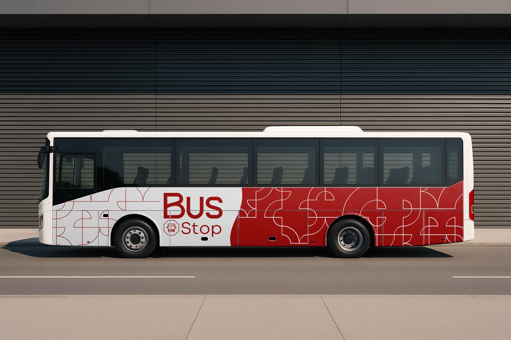

Recarga Rápida
Adicione créditos à sua carteirinha de forma instantânea e segura, a qualquer hora e de qualquer lugar.
Recarregar AgoraRenovação Online
Renove sua carteirinha de estudante ou especial sem filas. Envie seus documentos de forma 100% digital.
Renovar AgoraConsulte as Linhas
Veja os trajetos, horários e planeje sua viagem com antecedência para não perder o seu ônibus.
Ver LinhasComo Funciona?
1. Cadastre-se
Crie sua conta em segundos para ter acesso a todos os serviços.
2. Recarregue
Adicione créditos via PIX de forma rápida e 100% segura.
3. Utilize
Use seu cartão normalmente. A renovação é feita online.

Sobre Nós
A BusStop nasceu com a missão de simplificar a mobilidade urbana. Cansados de filas e burocracia, criamos uma plataforma digital completa onde você pode gerenciar tudo relacionado ao seu transporte público em um só lugar.
Da recarga instantânea do seu cartão à renovação de documentos sem sair de casa, nossa tecnologia trabalha para que sua única preocupação seja chegar ao seu destino.
Nossa Equipe
O projeto BusStop é desenvolvido por estudantes dedicados.
BEATRIZ VITORIA LOURENCO VITORIANO
BIANCA SOUSA SALES PAIVA
LIZ ALMEIDA DE OLIVEIRA
PEDRO HENRIQUE ALVES DE AZEVEDO
WYLLERSON DE AQUINO CAVENAGHI
Perguntas Frequentes
Pagamentos via PIX são processados instantaneamente. Assim que o pagamento for confirmado, os créditos serão adicionados ao seu cartão em até 5 minutos.
Você precisará de uma Declaração de Matrícula/Escolaridade atualizada (emitida nos últimos 30 dias) e um Comprovante de Residência recente (dos últimos 90 dias) em seu nome ou no nome dos seus pais/responsáveis.
Significa que recebemos seus documentos e eles estão na fila para análise pela nossa equipe. Você pode verificar o status atual a qualquer momento na sua página de "Meu Perfil".
Você pode alterar dados de contato (como telefone e endereço) na sua página de "Meu Perfil". Dados de identificação (Nome e CPF) não podem ser alterados online por motivos de segurança após o cadastro inicial.
Basta ir à nossa secção "Linhas" no menu principal. Lá, pode clicar na linha que deseja e um mapa com o trajeto simulado será exibido.
Na página de Login, clique no link "Esquecu sua senha?". Iremos enviar um email com as instruções para que possa criar uma nova senha de acesso.